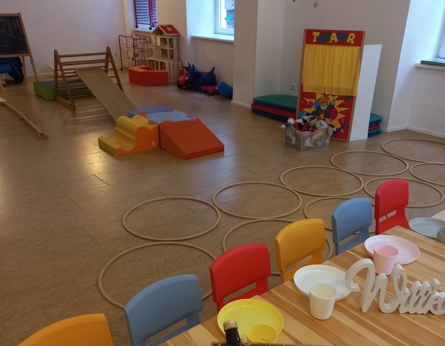

Our Kindergartens in Vienna
Waldorf kindergarten in the center of Vienna
Introduction
At Waldorf kindergarten in the center of Vienna, we embrace a child's natural curiosity and creativity. Located in the heart of Vienna, our kindergarten offers a warm and inviting environment that nurtures young minds through the Waldorf educational philosophy.
Description
Our kindergarten is a haven for imaginative play, with spacious playrooms filled with natural materials. The outdoor garden allows children to connect with nature, fostering a love for the environment.
Services
- Creative arts and crafts
- Organic gardening
- Storytelling and puppet shows
- Seasonal festivals and celebrations
- Holistic learning approach

Kindergarten of the Karl Schubert School
Introduction
Kindergarten of the Karl Schubert School is dedicated to supporting children with special needs. Our nurturing environment in Vienna helps each child to thrive through personalized attention and care.
Description
Our classrooms are equipped with therapeutic tools and toys designed to aid development. Our staff includes specialized educators and therapists who work collaboratively to provide the best care.
Services
- Specialized educational programs
- individual therapy sessions
- inclusive playgroups
- sensory integration activities
- Family support services
Kindergarten of the City of Vienna (Audorfgasse 20)
Introduction
Kindergarten of the City of Vienna (Audorfgasse 20) is a vibrant community center that offers a diverse and enriching environment for all children in Vienna.
Description
Our facility includes modern classrooms, a large playground, and a variety of learning materials. We emphasize multicultural education and community involvement.
Services
- Multilingual education
- cultural activities and field trips
- community engagement projects
- after-school programs
- nutritious meal plans

Kindergarten of the City of Vienna (Moßbachergasse 20-24)
Introduction
Situated in Moßbachergasse, our Kindergarten der Stadt Wien is a pioneering early education center focusing on innovative learning methods and holistic child development.
Description
The kindergarten features state-of-the-art learning facilities, a science and discovery lab, and an expansive outdoor play area. We emphasize STEM education from an early age.
Services
- Early STEM education
- outdoor educational activities
- art and music programs
- physical fitness and wellness
- eco-friendly practices
Montessori Children's House Vienna 1
Introduction
Montessori Children's House Vienna 1, located in Nußdorferstraße, is a place where children lead their learning journey. We follow the Montessori philosophy to foster independence and self-directed learning.
Description
Our classrooms are thoughtfully designed with Montessori materials, allowing children to explore and learn at their own pace. The serene and supportive environment encourages exploration and discovery.
Services
- Individualized learning plans
- hands-on learning experiences
- outdoor educational activities
- parent-child workshops
- community involvement programs